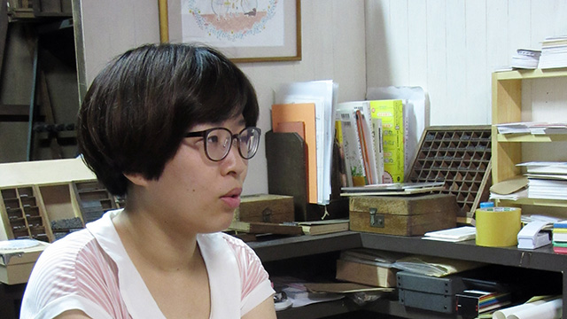

若林亜美さんインタビュー「好きなことは突き詰める」
夫婦で活版印刷ユニット「まんまる」として活動し、今年活版印刷工房をオープンさせた若林亜美さん。フリーランスのデザイナーとして活躍するかたわら、2015年から神保町で行われている活版印刷イベント「活版TOKYO」の実行委員をはじめ数多くの活版イベントやワークショップに参加されています。その活動の原動力や、活動に対する姿勢を伺いました。
神様が「活版印刷をやれ」と言っているのかなと
 まんまる 若林亜美さん
— 活版印刷に出会ったきっかけを教えてください。
就職して初めての秋くらいに、ALL RIGHTさん（活版印刷も行っているデザイン会社）が毎年や開催している「印刷のいろは展」（現在の「印刷のいろはフェスタ」）に行ったんですが、そこで初めて活版印刷と出会いました。
そこには活字と活版印刷機が置いてあって、自分で印刷体験もできて。（出来上がったものを）もらった時に「凹んでる！この印刷おもしろい！！」と思ったんです。
「こういう手作業っていいな」ってその時は単純に思ったんですけど、すぐにそこから名刺を作るとか印刷所に行くということでもなく、最初は「いいな、活版印刷好きだなあ」で終わったんですよね。
その後退職し、次に入った就職先で「どういうものが好きか」って聞かれた時に、「紙雑貨も好きですけど、活版印刷が特に好きです」って答えたんです。それを社長が憶えていて、2013年の7月くらいに「君、活版印刷好きだって言ってたよね。ちょっと流行っているらしいから、活版印刷の展示をやってみたら？」と言われたんですよ。
ちょうど東京蚤の市で東京活版展をやっていたので遊びに行ったら、真映社さん（活版TOKYOの実行委員長）が出ていたんですけど、話してみたら会社が前の会社から歩いて15分くらいのところだったんです。そんな縁もあって仲良くなれたので、「活版印刷のイベントをやる」と伝えたら、運良く手伝ってもらえることになったんです。活版のイベントは、2013年の7月に企画が持ち上がって、3ヶ月後の10月に開催しました。このイベントがきっかけで、活版印刷にすごくハマってしまったんです。
活版印刷関係のイベントがあれば全部行くし、活版印刷のベテランの方がちょっとしたイベントに出ると聞けばそれにも行って。今武蔵美で教えていらっしゃる弘陽の三木さんという方を特に追っかけてて（笑）。「また来たの？」って言われるくらい。
そんなこともあって「活版印刷、すごくやりたい！」と思っていたら、ひょんなことから真映社さんに「手キン（小型の活版印刷機）を売ってくれる人がいるらしいよ、買えば？」と教えていただいたんですね。しかも、20万円弱くらいなので、買えない額じゃないんですよ。当時夫に「買ってもいい？」って聞いたら「え、部屋に置くの？」っていう反応だったので、「この人を活版印刷の道に誘い込まなきゃいけない！」と思って、一緒にイベントに行ったんです。彼はホームセンターに行くとネジとかずっと見ていられるような機械大好き系男子だったんですけど、活版印刷機にひと目でやられてしまって（笑）。それで家に印刷機が来ることになったんです。その時は神様が「活版印刷をやれ」と言っているのかなと思うくらいトントン拍子でしたね。
まんまるを始めた時は、何をするか考えていなかった
まんまるで販売しているコースターと樹脂凸版
2013年の11月か12月くらいに印刷機を譲ってくれる方が現れたのですが、それと時を同じくして ALL RIGHT さんが活版印刷部門で募集をしてたんです。学生の時から ALL RIGHT の社長でもある高田唯さんがデザイナーとしてすごく好きだったのもあり、さらに（ALL RIGHT の）師匠が私の追っかけてた三木先生。「絶対ここに入りたい！」と思って当時の会社に「辞めます」と伝えたんです。入社試験は最終面接まで行ったんですが、そこに自分が活版印刷に出会ってからいまこうして応募をするまでを絵日記にして持っていったんですよ。でもダメでした。今思うと絵日記が熱すぎたのかな（笑）。
その面接では「もし落ちたらどうする？」と聞かれたんですけど、自分は何とも思わなかったんです。「自分で活版印刷機を買うことを決めているので、フリーランスでデザインの仕事をしながら活版印刷は真映社さんや弘陽さんに習ってやっていきます」と答えました。それで2014年の1月1日にまんまるを始めたんです。当時夫も活版印刷にハマっていて「僕もやる」と言うので「なら二人でやろっか」となり活動を始めました。
「何の活動をしよう」とかは、特に考えていませんでしたね。ただ印刷機があるから、まずは自分の名刺を刷って、たまに仕事があったら活版でカードなどを刷ろうかなというくらいの気持ちで始めて今に至ります。印刷機はもう売ってくれるという人が出てこなくなりましたね。欲しい時に手に入る類の機械ではなくなっているんだなと最近は感じています。
「まんまる」という屋号は、大学4年生の時に「自分がもしパン屋さんを持ったらどういうグラフィックを使うか」という想定で、紙小物とかを全部自分で作る課題をやったんですが、その時に考えたパン屋さんの名前から取りました。たしか第一次活版ブームが2002〜3年あたりにあって、次が2013年くらいにあったと思うんですけど、見事にその活版ブームに乗ってここまでおかしくなっちゃいましたね（笑）。でも、始めてよかったです。
知ってくれるきっかけをつくる
— 活版TOKYOは最初の年から参加されているとのことですが、始めるきっかけとなる出来事があったんですか？
2014年の1月にまんまるをはじめた直後に、横浜にある築地活字さんの活字鋳造見学会へ夫と一緒に行ったら「この後『活版、横濱（横浜で開催されていた活版印刷イベント）』の打ち合わせあるから来なよ」と言われたので付いて行ったんです。そしたら、人手がいないからとそのまま「活版、横濱」の運営になりました。その前の年も「活版、横濱」をやっていたのですが、二回目で終わったんです。
「研究社」という昔から辞書を出してる出版社があって、そこの直属の「研究社印刷」さんという印刷所をやっている社長さんと、「活版、横濱」の時にお世話になって知り合いました。そこは昔、活字組版で辞書を作っていた会社で、今は全部オフセットに移ってるんですけど、社長さんが活版印刷を本当に好きで資料を全部残してあるんです。そこの会社を2014年の10月に他の活版仲間と数人で見に行ったのですが、その場で「このまま活版印刷のイベントを終わらせてはいけない！」と盛り上がり、活版TOKYOをやろうという話になったんです。
その時若手の、ここ10年の内に活版印刷を始めた人しかいなかったので、私たちだけでやると来てくれない人もいるかもしれない。そこで、ベテランで私たちのことを分かってくれる真映社さんに実行委員長をお願いしに行き、真映社さんも「東京でも活版イベントをやりたい」と以前から考えていたので、開催が決まりました。
みんなの総意としては、「新しく活版印刷イベントをやるんだったら、自分たちでやったらやりたいだけ続けられるからどこの会社にも頼らないイベントにしよう」ということになりました。それと、個人的には私みたいな人を増やしたいと思ったんです。活版印刷が好きで、「名刺作ってみよう」だったり「カードを作ってみよう」とか、「思い切って活版印刷始めよう」と思うような人をもっと増やすイベントを私はやりたいと思ってました。真映社さんも同じ思いで、マーケットだけではなくて、クリエイターさんとコラボしたワークショップとかもやる今の活版TOKYOの形が決まりました。
— 活版TOKYO1年目は期間が短かったということですが、大変だったことはありますか？
「活版TOKYO 2015」はいろいろなメディアに取り上げられた
一人で全部やったんですよ。企画をして、紙も提供をお願いして。提供をお願いするためには企画書がいるというので自分で書いて。本当にお金がなかったので、申し訳ないけど印刷所の方にも事情を説明して協力していただいたり。もちろんこちらも出来る限りの協力はさせていただこうということで、全部で5箇所くらい立ち会いに行きました。その間1ヶ月くらいは自分のデザイン仕事はできなかったですね。今はイベントなどによく出ているので「フットワークが軽くて精力的だな」と思われることが多いのですが、実際はすごい引きこもりなんですよ（笑）。ストレスを1ヶ月間ためながらやるんです。でもイベント当日にみんなに会って「すごくよかったから来年もやってください！」と言われると嬉しくなっちゃいますよね。
あと、来てくれたお客さんが喜んでくれるのも嬉しいんですけど、ベテランの方々がすごく喜んでくれるんですよ。東京活版展の最後の時にあまり盛り上がってないのを見て「あ、ブームは終わったんだ」って思った方もいらっしゃったみたいで、最初の時「イベントをやっても人は来ないから、やめなさい」と止められたんです。イベント中は3日間会場にいなければならないし、売り上げで日給分も出るかどうかわからない。でも「絶対に人を呼ぶから大丈夫！」と言って反対を押し切って開催したんです。
初年度はクリエイターを増やしすぎて37人呼んでしまったり、毎晩のようにいろんな会社にプレスリリースを送ったりと大変だったのですが、ちゃんとお客さんが来てくれたし、送ったプレスリリースもいろいろなサイトで紹介してもらえたし、新聞の取材も来てくれたし。答えがちゃんと出た、方向は間違ってないなという手応えはあったので、今年もやれたんです。それまでの苦労は全部報われたという気がしましたね。
いいところを知っているから立てられる企画もある
— 企画を考える時のプロセスや、どういうところから思いついているか教えてください。
デザイナー的な思考になってくるんですけど、活版印刷の魅力を伝えたいなと思った時に、どうしたら人に伝わりやすいかなと考えるんです。
最初の年は人を呼ぶことが目的だったので、いろんな作家さんを呼ぶと、いろんな作家さんに付随するファンが絶対来てくれるなと思って。1人10人連れてきてくれたら作家さんが30人いればお客さんは300人になるじゃないですか。集客が見込める！と思ったんです。
30人の作家さんがほとんど Twitter などの SNS をやってる世代の方なのでみんな告知してくれる。ほとんどの方が活版印刷をやったことがないから「私の作品が活版になります」って言ってくれて、宣伝にもなりました。なので初年度は人を呼びたいっていう目標で成功したんです。
2年目は、去年より人数を減らしたいのと、30人のうち売り切れた人と売り切れなかった人がいたんですね。そこを改善するため、（ノートの表紙を印刷する）ワークショップにしたんです。それなら一回も作らない人がいたとしても、版代だけで済むのでマイナスが少ないんです。
今年のテーマが「文房具」だったので、コピックなどで有名なTOOさんに協力をお願いしに行ったんです。その時に「メッセージカードとか作りたいんです」と言われたのですが、あまり新鮮さがない。そこでふと「今、ぬりえブームだな」と気づいたんです。ぬりえだったら白黒で印刷できるし「向いてる！」と思いました。
まず、ぬりえの本も手がけている井田（千秋）さんに依頼をして、サイズも相談して決めたんです。tamaさんは、TOOさんが前々からお仕事をしたかった作家さんで、快く引き受けて下さいました。井田さんは女の子、tamaさんは動物を描かれるので、オシャレな絵が欲しいなと思って。亀井（英里）さんは大学の同級生で、彼女だけ「テキスタイルっぽいものを描いてほしい」とお題を出しました（笑）。イラストだけではなく紙も3種類にバラけていて、売り上げも割れるだろうなと思っていたのですが、全部買ってくれる人が多かったんですよ。これは嬉しい誤算でした。
作ってみてわかったのですが、塗ると筆先で活版印刷の凹凸が感じられるんです。それも嬉しい誤算で。そういった副産物が生まれたら、それをまた来年に活かせますしね。基本的に企画する時には以前の経験を意識的に活かそうと心がけています。
あと、良いものをちゃんと知っているからこそ立てられる企画もあると思います。初年度は本当に迷惑をかけてしまったので「今年はスミ一色で」と印刷所の方に言ったら「おお、今年は楽だな！」って喜ばれてしまって。しかもそれがよく売れたんです。だから今年も印刷代は払えないと言っていたのが、後々払えることになり安堵しました（笑）。
そうやって人が来て物が売れてというサイクルを自分たちなりに作るとまた楽しい企画が立てられる。自分たちでやっているからこそ、利益が出たらその分は来年につぎ込める。そうするとまた楽しいことができて、お客さんにも喜んでもらえるかなと。
ウェブでの情報発信と実物の魅力
Twitter などで使用した「#活版ぬりえ」のアイデアは、亀井さんが出してくれました。「みんな塗ったら見せたくなるはずだから、ハッシュタグ作ってつぶやきなよ」って。
インターネット、特に Twitter を頑張ったのは、なるべく多くの人に足を運んでほしいなとシンプルに思ったからなのですが、実際に昨年も今年も来場者アンケートの「イベントを知ったきっかけ」の欄は Twitter がダントツだったので、頑張った甲斐はあったのかなと（笑）。
情報の発信はウェブだけれど、活版印刷は実際に見て触った方が断然良いですね。写真では映らないものはやっぱりあって、実際に見たら「活版の絵ってこんなにデコボコしてたんだ！」というように魅力に気がつく。すると「来年もこなきゃ！」という気持ちになるんじゃないですかね。
活版TOKYOは活版職人の方が実際に来ているので、直接職人さんとコミュニケーションが取れるのがいいなと思うんです。私は初めてイベントに参加した時に「昔からやってる職人さんと喋れるのってすごい！」と思っていたので。そういう新しいコミュニケーションの場になればいいなと考えています。
— デザインのお仕事で心がけていることはなんですか？
フリーランスになってからは対個人が多いのですが、密に話ができる点が良いと思っています。個人のために作る時は、規格サイズに合わせる必要性があまりなく、その人が欲しいサイズや印刷方法でいろんな方法を試せるので、まず「どういうものを作りたいですか？」というところからスタートすることができます。
私は印刷加工の知識が多少あるので、そういう面からも提案ができる点が強みだと思っています。お客さんの話をしっかり聞いて、紙加工も含めて提案して。それで求められているもの、あるいはそれ以上のものを予算内できっちり作る。無理してお金を出していただいて、それでペイできればいいんですけど、どれだけ良いものを作ってもお客さんのもとにちゃんとそれなりにお金が残るかが不明瞭なのであれば無理する必要はないと思っていて。それだけ予算を守ることは重要なことだと思っています。予算内で何ができてどういうものが作れるか。それを提案するのもデザイナーの力量の一つだと思っています。
悪いこともあるかもしれないけど、いいことの方が多いからそんなに気になってないかもしれない。
 活版印刷機と「活版TOKYO 2016」のフライヤー
活版印刷機と「活版TOKYO 2016」のフライヤー
— ご夫婦でやられていて、良かったことや大変なことはありますか？
良かったことは、喧嘩しても長続きしないということですね（笑）。喧嘩しっぱなしだと仕事にならないので。ワークショップとかイベントの前は特にね。
二人で仕事できるのは楽しいですよ、夫婦だけに共通の話題も多いですし。活版印刷が好きすぎて「結婚式を挙げるくらいなら印刷機1台買って！」と言ったくらいなので（笑）。悪いこともあるかもしれないけど、良いことの方が多いからそんなに気になっていないのかな。
男女で仕事していると「体力差になかなか気づいてもらえないな」と思うことがあるのですが、それも夫婦だから伝えやすいですね。会社にいた時は、男性の先輩についているとエスカレーターは全部駆け上がっていくし、エレベーターも使わない。荷物も「俺は先輩の荷物を持っていたから」と言われて持たされたりもしました。先輩は「男女差別はよくない！」という思いだったようですが、私は「男女じゃ体力が違うよ！」と思っていましたね（笑）。
残すこと、継続すること、増やすこと。
 活字など機材はもらい物が多い
活字など機材はもらい物が多い
— 今後の目標を教えていただけますか？。
活版印刷が好きな人を増やすことですね。私たちは「まんまる」を、この仕事を成功させなければとならないと強く思っています。私たちが上手くいかなければ「活版印刷はやっぱりお金にならないんだ」と思われてしまう。活版印刷を愛する者としてはそれは絶対に避けたいんです。とにかく「ずっと続ける」ことが目標ですね。
あと将来的にはここを活版のシェア工房にできたらいいなと思っています。そういう場所がアメリカのポートランドにはたくさんあるみたいで。ヨーロッパにもあって、そこでワークショップなどのイベントができたりするんですよ。日本は外部のイベントに出ていく人は多いけれど、印刷場はほとんど解放していないですね。うちはウェルカム状態ですが（笑）。基本的には私たちが印刷をしていたとしても印刷機は1台しか使わないので、残り3台は空いています。活字などの機材はほとんどがもらいものなので、どんどん使って、どんどん還元しようという気持ちがあります。
残すこと、継続すること、増やすこと。目標はそんな感じかな。増やすことは活版TOKYOでやって、残すことは私たちが続けていくということかなと思っています。
— 最後に女子美生にコメントをお願いします。
学生時代じゃなくてもやりたいことは見つかるよ、ということですかね。私は学生時代、本当にやりたいことがなかったので（笑）。当時の先生に報告すると「よかったね」と労っていただいたりするくらいで。
個人的には「あ、これ好きだな」と思ったことは突き詰めてやった方がいいと思います。今になって思うのは「学生時代だったらもっとみんな協力してくれたかもな」ということですね。私は活版をやり始めた時が27歳だったんですが「20代のうちに頑張った方がいい」というようなことをいろいろな人に言われたので。
ベテランの職人さんの所へ伺うと、意外とみんな優しいんですよね。知らない人と喋ることが怖いなと思ったりするけど、行って聞いてみるのは思ったより楽で、いろいろなことを教えてもらえてよかったです。だから好きになったらネットで探すだけではなくて、実際に現場に足を運ぶのが大切なんじゃないかなと思います。